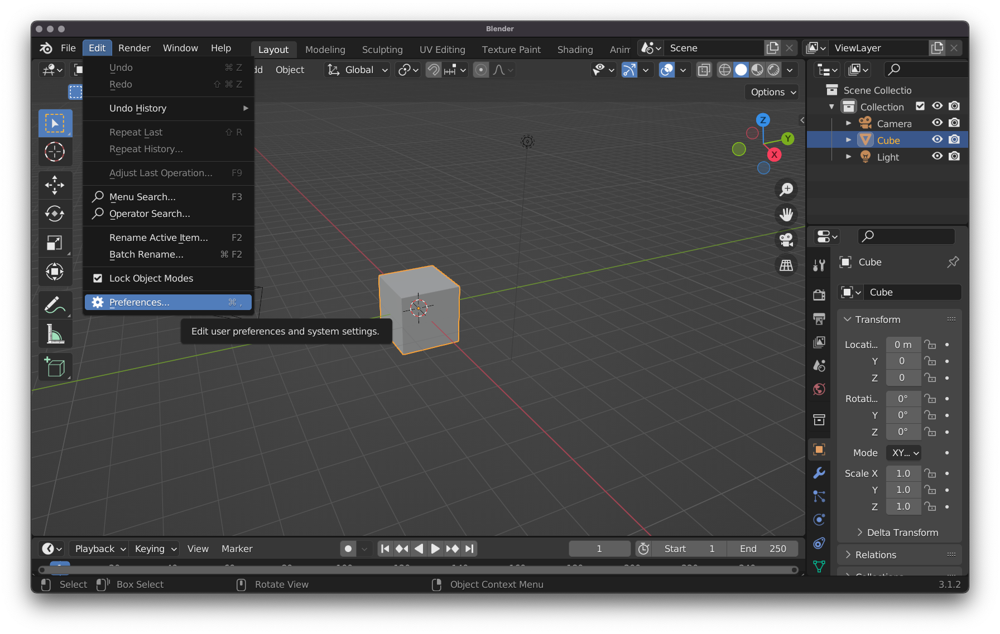
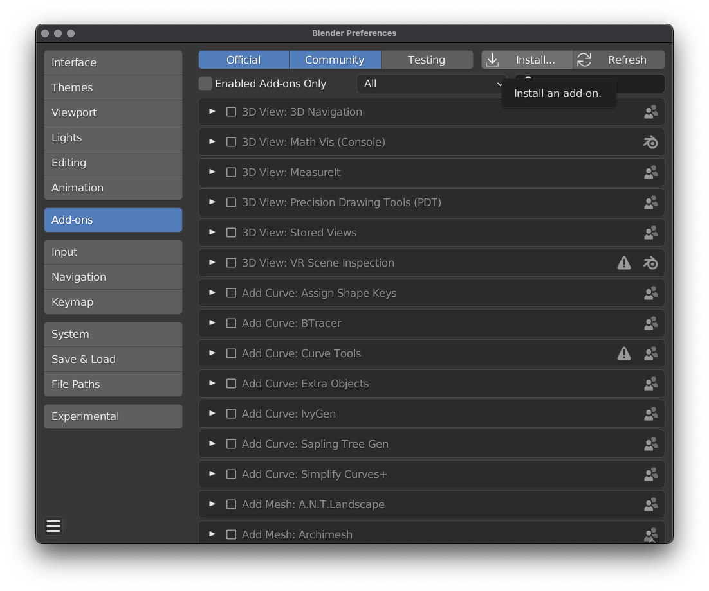
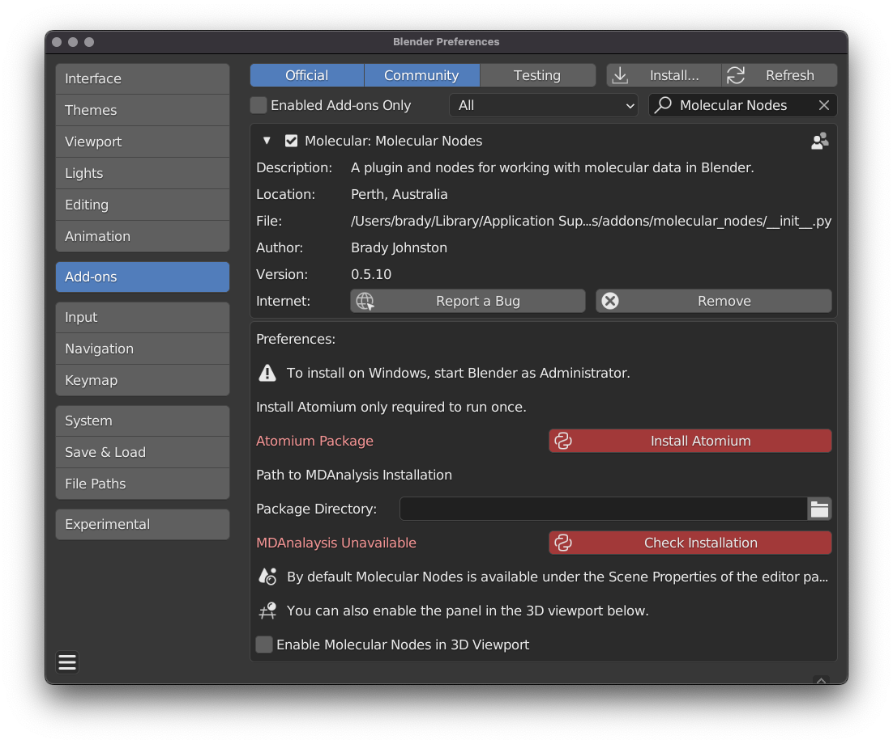
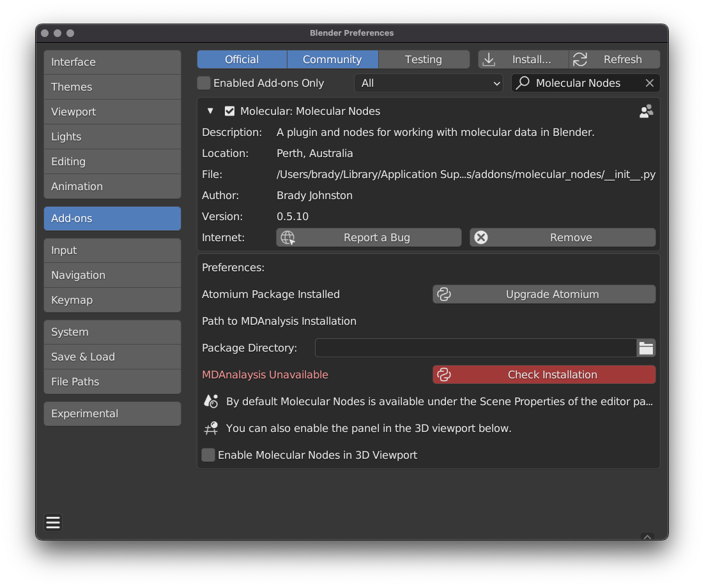
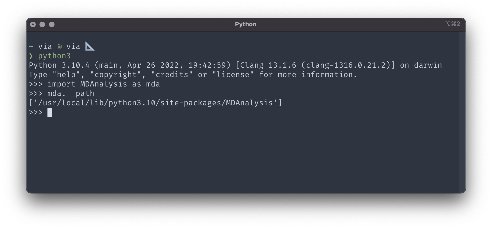
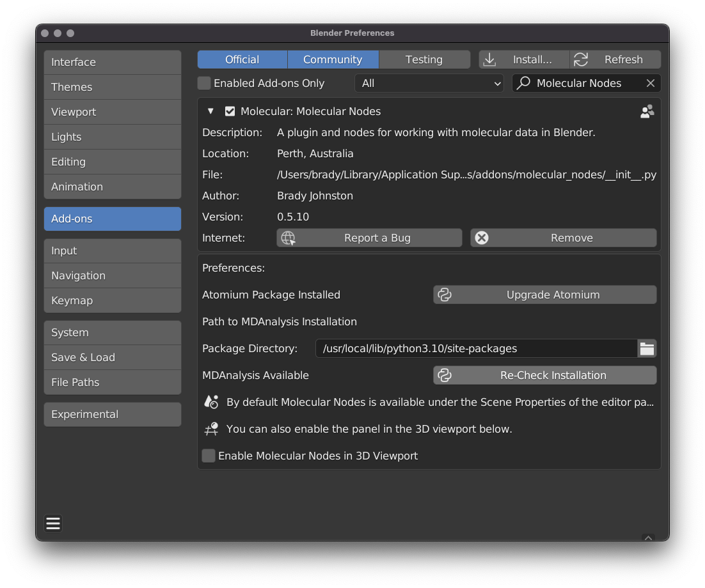

Installation
To install molecular nodes, download the latest release from the github releases page. Ensure that you have a version of Molecular Nodes that matches the version of Blender you have installed.
The current Molecular Nodes release only supports Blender 3.1.2.
1 Installing the Base Add-on
1.1 Open Preferences Panel
Click ‘Edit’ -> ‘Preferences’ or press
Cmd+,on Mac.

1.2 Click ‘Install’ on the Addon Page
Click on the ‘Add-ons` tab on the middle left, then the ’Install’ button on the top right.

1.3 Select molecular_nodes_X.zip
The
X’s will be the current version number of the add-on.
Importantly do not download the entire Molecular Nodes GitHub repo and try to install that. Download the bundled release from the release page and install that with Blender.

1.4 Enable the Add-on
If the preferences panel doesn’t automatically show the installed add-on, search for the add-on to find it. Tick the box in the upper-left corner to enable it.
2 Installing Additional Dependencies
2.1 Installing Atomium
To be able to download from the wwPDB and open local .pdb and .mmcif files, click the ‘Install Atomium’ button, which will install the python package atomium and make it available to Blender’s bundled Python.

Wait several seconds, and when Molecular Nodes detects it has successfully installed, the button should change away from red.

Molecular nodes is now ready to be used. If you wish to enable reading of Molecular Dynamics trajectory files, such as .xtc from GROMACS, then you will need to install MDAnalysis. Checkout the Getting Started page on how to import structures from the PDB with molecular nodes.
2.2 Installing MDAnalysis
To parse and work with trajectory files, we use the great python package MDAnalysis. Unfortunately we are unable to install this package inside of Blender’s bundled python, so it requires some extra steps to enable this functionality.
2.2.1 Installing MDAnalysis in Your Own Python
Blender 3.1.* is bundled with Python 3.10. It is best if you have a local installation of the same Python version, to avoid potential errors, but some version mismatch may be workable.
Once you have an instllation of Python 3.10, install the MDAnalysis package as below.
python3 -m pip install MDAnalysis2.2.2 Getting the location of MDAnalysis
Once the package has successfully installed, find the path to the package installation by importing the package inside of python and accessing the __path__ attribute.
Run Python
python3Import MDanalysis and get the path
import MDAnalysis as mda
mda.__path__Example terminal output.
Copy this path without the ‘MDAnalysis’ part, so the above path would be like this:
/usr/local/lib/python3.10/site-packagesAnd paste this into the path in the preferences panel of Molecular Nodes.
Now click the ‘Check Installation’ button to see if Molecular Nodes can load MDAnalysis successfully.
If this fails, you may need to restart Blender and press the ‘Check Installation’ button again.
If successful, the red button will change colour as below, and all of the functionality of Molecular Nodes should be available.

3 Start Importing Structures!
Molecular nodes should be fully installed. See the Getting Started page on how to start importing into Blender!